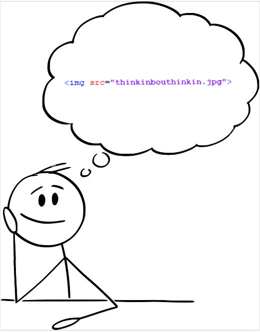

Think this was Lecture 05 - on div and span elements
Learnt about div tags and span tags as well.
Hopefully I'm learning something about it...
The div tags are used for block content- meaning that it must be on a line on its own
(unless there's a span tag)
- which now roughly translates to the current flow content. Whereas the span tags are for in-line content, now roughly equating to the phrasing content.
Something on semantic elements - Lecture 06 if I had to guess
Semantic means something that adds to something else to ADD more informaion or logic...
Also learnt about the article element.
ALSO learnt about the section element, and now have formatted eveything to include sections to make HTML neater and more presentable.
Different kinds of lists - Lecture 7
For unordered lists, you must use the ul tag(just means Unordered List), and for everything you put inside of it, you add the li tag.
So, for example, here are the reasons why you should join the course I've enrolled in:
Its free
It's a step-by-step process for all beginners in:
Hyper-Text Markup Language
Cascading Style Sheets
JavaScript
It has good reviews...
You can also make ordered lists with the ol tag. It's basically the same formatting and code like the unordered lists, but it puts stuff in a specific ORDER(1, 2, 3, etc.). Don't forget to put the li tag within...
Probably lecture 8 because the last thing I did was lecture 7 - HTML character entity references
Also found out about character reference to wrap text together (essentially meaning that the words will always stay together even if you shrink the page). Could use this to link words with special meaning together. In order to do so, take away the space between the words and add "& n b s p ;".
Lecture 9 - on creating links (its TOO much)
So I learnt how to make links to various places - and it still hurts my mind thinking about it.
You can:
Link to other pages wthin the same site (internal links)
Link to other websites (external links)
Link to sections withing the same document
To link, you need to use the a element (meaning anchor) with the href attribute and an equals sign next to it. Then add speech marks and put the name of the file or external website url within the speech marks (e.g. example.html, or https:example.com).
Also by putting the title attribute, you can display some text when you hover over the linklike this. If you were wondering what that link is to, its just the GitHub page for all the resources shown within the course.
Somehow, I unexpectedly learnt the use of the id attribute, which is unique for each tag, and that is literally the reason for its existence...
To link to sections within the same document, all of the sections you want to link to must have a unique id attribute. DO THAT FIRST. Then, instead of links within the href attribute, add a # and then immediately follow with the id. And voilà, it should work.
Someone told me that links are like building bridges ;)
Completely forget about this. But then again, I just rememebred. To force the browser to open the link on a new tab, use the target attribute, and add "_blank".
Following this lesson, I've gone and made a contents section with links to all of the sections within the document relating to the different topics. Also added a "back to top" link at the bottom.
Images... Almost done with the basics - lecture 10
So basically as the title says, it's just adding images.
For that to happen, use img tag (no closing tag needed) then add the src attribute, and then the name of the image file or image link (both work).
Also he recommended to specify dimensions through the height and width attributes (lengths are in pixels... not mm or cm!).
This is basically how you do it:

Can also add alt attribute for the "visually impaired"... If they were visually impaired, they wouldn't be able to see it in the first place!
A combination of Lectures 12 and 13 on CSS basics
Lecture 12 just introduced CSS and the style tag. Basically goes deep into the building blocks behind a CSS rule.
Lecture 13 goes in-depth about the different CSS selectors: element, class and id.
Element selector makes it so that all of one type of element has the same CSS rule. So in the style tag, if I write div, put some curly brackets, and put CSS in it, it will change the style for all of the div tags.
Class selector allows you to write a class (almost like an id) and then add class attribute on a tag. To do that, do the same as the element selector, but instead of a tag, add a full stop (.) and write the name of the class - it can be anything you want it to be.
For id selectors, it's basically the same as the class selector (except instead of the class, you add the specific id).
Also, you can stack CSS styles. So, one CSS rule can be attributed to any combination of class, id and element selctors.
Lecture 14 - Combining selectors (drastically more complex)
This was very confusing so... I just screenshotted the slides with all the relevant information.
I was tempted to do that, but it didn't look good. Anyways because this stuff is so complex, I've added example codes in the comments for each section.
Element with Class Selector
Let's say we had the class bold and the element span. If we wanted to style only every span element with the bold class, first type span and immediately follow it up with .bold without a space. And after you finish up the style sheet, every span element with the bold class should have the desired style.
Child Selector
Let's say we only wanted to style span elements within another element (let's say the section element), and only when the span element is a direct child of the section element. First type the parent element (the section element) and add a space; after add a greater than (>) and another space, followed by the child element (span). In this case, the span element will only have the certain styling when it is the direct child of the section element, so, if the span element is within the section element but also is directly enclosed by another element (for example p) it will not work.
Descendant Selector
Let's fix the predicament from the last one. If we wanted to style every span element that is inside (at any level) of the section element, first type the parent element (for this scenario, the section element) and add a space, directly follow this through with the descendant element (span). In this case, the span element will always have that styling when it is a descendant of the section element.
Finally, the last two are not limted to element sectors, as they can also work for class sectors. (See comments for more info)
Lecture 15 - Pseudo-class selectors
I had to look over this a ouple of times because... the instructor didn't really say much about what they were or what they were used for. But I was able to scavenge for some information about it.
To use one of these, you must type it in the form:
selector:pseudo-class
.
The first two pseudo-classes I learnt are link and visited. They are both usually used in tandem like I did up in the style element. Link refers to the links in the page, and provides a style to all links. Visited means that HTML allows that after you click a particular link, a different style can be applied to that link rather than being the same as an unclicked link. In our case, however, we don't want to differntiate between the two, so we'll style them together.
Another 2 pseudo-classes we're using together - hover and active. Hover (literally does what it is) provides a style for the class as it is hovered over. In our case, it is the links.An active is that state when the user actually clicks on the element but hasn't yet released his click; this also has a separate style.
And the most complex one... The nth child pseudo-class. To use this, type the class and add :nth-child() without a space. Let's say we have 9 li tags in the contents section. With this pseudo-class, we can specify which of these 9 li tags we want to make different. If we wanted to change only the 3rd li tag, just put 3 in the brackets and type the style in the same way you would do for the others - with curly brackets. If you wanted the odd of even numbered li tags to have a certain style, just put odd or even in the brackets.
Style Placements is Lecture 16
Style Attribute within Elements
Another way you can style individual elements without having everything the same style, is by using the style attribute. I've already done this multiple times before. Just write style= and ,in quotation marks, add the specific style you want, just like you do in the style element. However, this is quite ineffective if you're trying to create a whole new website, as you will have to do everything separately.
External Style Sheets
The other way to make styles is by using an external style sheet. This is used by almost all large and well-crafted websites; this is where you link the CSS of one HTML file to a style sheet in a CSS file. A great example of external style sheets is the instructor's use of style.css to change the style the HTML file style-placement.html .
To create this, all you have to do is just create a separate CSS file with all of the code of every style you want on your website. then use the link tag and add the rel attribute by typing rel="stylesheet" and add the href attribute to link in the external stylesheet (for example, href="style.css"). However, you MUST make sure that the CSS file is in the same directory as the HTML file.
Lecture 17 - I think- on Resolving Conflicts
Even though I said this earlier, this is by far the most complex thing I've learnt...
This is basically about the figuring out which style is going to be shown when there are 2 or more CSS styles being used for the same element/text.
Origin Precedence
When in conflict:
Remember that, an HTML page is read sequentially from top to bottom. When there are two different specified styles for an element, the declaration at the bottom wins. For external stylesheets, consider it to be at the position of the declaration of the stylesheet.
When not in conflict:
When there are two different declarations for the same element but they focus on different attributes, the styles simply merge, and the element displays properties of both the declarations. In fact, whenever two declarations are not in conflict with each other, they merge.
Inheritance
A child element always inherits the styles of the parent element, unless declared otherwise separately. Even here, if the declarations are not in conflict, they simply merge.
Specificity
When two different selectors are used but both select the same element, the precedence is decided by specificity rules. We can think of the specificity of an element as a 4-digit number, and the greater number wins. The number is found in the following way:
The thousands digit denotes the presence of inline styles.
The hundreds digit denotes the number of IDs specified in the declaration.
The tens digit denotes the number of classes (or pseudo-classes) specified in the declaration.
The one's digit denotes the number of HTML tags specified in the declaration.
!Important
When you use !important with a style, it bypasses all the rules and sets the style defined by that selector.
Lecture 18 - Styling text
There are many ways you can style fonts using CSS. These styles can help change up your website to make it more readable and interesting. I think I've learnt about most of these (he says while scratching his head) so I won't go into much detail about these. Just some CSS styles that moght be good to know are:
font-family
color (should try to get used to using hex codes)
font-style
font-weight
font-size (usually in pixels, but can sometimes be in a percentage or in ems - I'll explain this in depth later)
If you need to find out any other specific CSS styles you want to implement, or are just looking for an in-depth explanation on them, just go to the CSS section of the w3schools website for more info.
As I said earlier, you can not only display font sizes based on pixels, but also based on relative amounts. You can also determine the font size based on a percentage. If I wrote that font-size:120% it would mean that the font size should be 20% larger than the default of the browser. For example, if the browser default was 20px, with the 120% font size, it would now be 25px.
An em is a unit of measurement that is equivalent to the width of the letter m in this particular font that we're using.
So if we specifically write that font-size:2em, the font size will be twice the current size of the font - so if it is 120% originally, with the 2em font size, it will be 240%. If there is a child element of that text, its font size will also be 2em, but if you want to bring it back to the original size, you will have to half the 2em in the new tag by making the font size in that tag as 0.5em.
Lecture 19 on the Box Model
The box model is basically a box that wraps around any given element. The box model consists of 4 distinct sections: the content, padding, border and margin.
The content is where text and images appear
The padding clears an area around the content
The border is the BORDER of the padding and content
The margin clears an area outside the border
We can use these terms to define the height and width of a certain element by saying how large the sections should be, in PIXELS. It can also be used to give distinct colours to it, like the colour of the border.
Also learnt that when you are specifying dimensions for each of the sections (other than content), you have to write the number of pixels on each side from top to left clockwise - so top, right, bottom, then left. For example, padding: 10px 10px 10px 10px; which an also be written as padding: 10px;.
Instructor also recommends that when you're messing about with box model, you should always set box-sizing: border-box; so when you specify the width of the element, it will factor in the width and height of the box sections; so basically written width/height - (2 × the sum of the specified width/height of the padding, border and margin) = width/height of content.
Also randomly learnt about * selector...
Finally, I also learnt about the overflow CSS style, which can be used when the text withing the element OVERFLOWS the dimensions of the box it is put in. By using overflow, you can make the text that is going past the box visible, hidden, or add scroll bars to scroll down to read the text.
Skipped a few... But this is Lecture 22 on Relative and Absolute Element Positioning
There are 3 types of element positioning: static, relative, and absolute.
Static positioning is default for all elements, except for html, which is relative
Relative positioning offsets the element relative to its normal document flow position. It can be done by using the CSS style position: relative;
Absolute positioning is relative to the closest ancestor which has its positioning set to a non-static value. It can be done using the CSS style position: absolute;
To move a certain element to a certain place, use the CSS styles top, left, bottom or right (e.g. top: 40px;). The direction and distance the element moves is determined by this; the direction used is basically opposite to the direction it will go. Using the previous example in italics, the element will go DOWN 40 pixels instead of going up.
Also, changing the positioning of the element that contains other elements (with changed positions) offsets its contents as well.
Lecture 23 on Media Queries
Media queries in HTML are used to make websites responsive to different screen sizes and devices. They help determine how web content should be displayed based on factors like screen width and device type.
Media queries are structured like this:
@media (max-width: 600px) {
...
}
In this example, when the width of the browser is 600 pixels or less, the enclosed CSS rules apply.
There are also other attributes you can use with @media, such as min-width (to say the minimum width to apply the CSS rules), orientation (pretty self-explanatory), screen, and print.
You can also mix these attributes together, by using and (which means that CSS will be applied only if BOTH attributes are met)
or by using a comma (which means that CSS will be applied if EITHER attributes are met).
(See comments for examples)